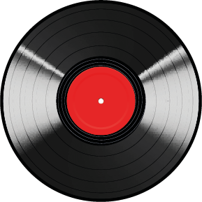

Om Vinyl
- I 1926 oppfant Thomas Alva Edison en forløper for den moderne LP-plata. Den ble ingen suksess. Oppfinneren mente blant annet at platene måtte ha lavt lydvolum fordi de helst burde spilles av i finere middagsselskaper.
- I 1931 kom den første plata med 33 1/3 RPM (omdreininger per minutt): ”Wayne King and his Orchestra: Popular Selection”.
- Materialet i de første platene var skjellakk. Skjellakk framstilles av gummilakk, et harpiksliknende stoff som blir utskilt av lakkskjoldlusa Coccus lacca.
- Den første LP-plata på vinyl, ”The Voice of Frank Sinatra”, ble utgitt i 1948.
- Den første stereoutgivelsen kom i 1957.
- I 1980 kom CD-en, i begynnelsen av 1990-tallet kom mp3-formatet, og det så ut som om vinylplatas tid var over.
- Men siden 1993 har vinylsalget igjen økt jevnlig over hele verden, også i Norge. I 2014 ble det for eksempel solgt vinylplater for 9,9 millioner kroner i Norge, og i 2015 hadde tallet økt til 14,2 millioner kroner. I tillegg til disse talla kommer bruktsalg og nettsalg.
